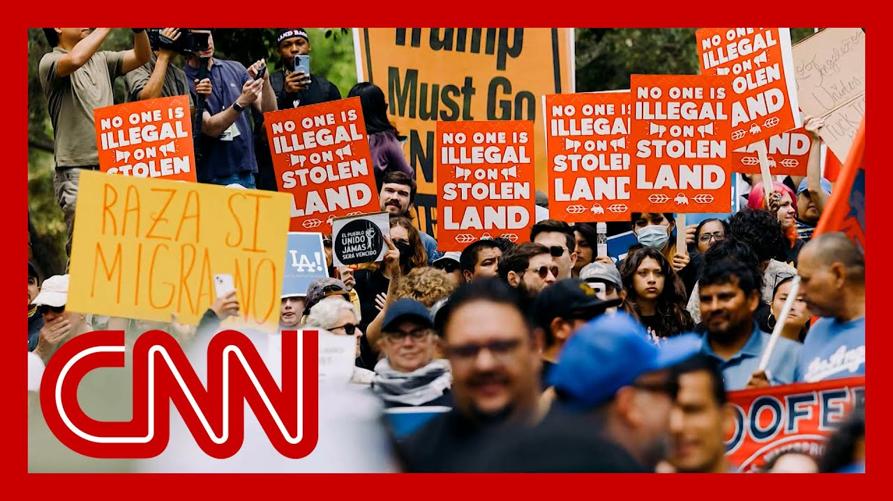

【法官驳回加州对特朗普部署国民警卫队的紧急限制令请求】
Summary: Federal judge rejects California's immediate request to block Trump's National Guard deployment but schedules arguments for Thursday, as protests continue against ICE raids targeting undocumented immigrants nationwide.
摘要： 联邦法官驳回了加州阻止特朗普部署国民警卫队的紧急请求，但定于周四举行听证会。与此同时，全国范围内针对ICE突击搜查无证移民的抗议活动持续进行。

⏱️ Estimated Reading Time: 13 min
📚 六级生词 📚 雅思生词 📚 托福生词 📚 专八生词 📚 SAT生词 📚 考研生词 📚 GRE生词 📚 高考生词 📚 视频里的生词
An update to the breaking news we told you earlier about the federal judge denying California's request for an immediate restraining ord from the Trump or order to have National Guards go to California.
我们早前报道的突发新闻更新：联邦法官驳回了加州针对特朗普派遣国民警卫队赴加州的紧急限制令请求。
That was a rejection of the immediate request for act But that same judge did set argu for this Thursday.
这是对紧急行动请求的驳回，但同一法官将辩论定于本周四举行。
So a rejection of the immediate but not for the request in gener This as protesters take to the streets again this evening protesting the ongoing Ice raids coming to Los Angeles, there are Ice raids all over the country right now as President Trump, tries to round up, increasing numbers of undocumented immigrants.
这是对紧急请求而非整体请求的驳回。与此同时，抗议者今晚再次走上街头，反对即将在洛杉矶展开的ICE突查行动。目前特朗普总统正试图在全国范围内围捕更多无证移民。
We're joined by, Texas Republican Congressman Tony Gonz the chair of the Congressional Hispanic Conference.
我们连线得克萨斯州共和党众议员托尼·冈萨雷斯，国会拉美裔会议主席。
That's a group of Hispanic Republican members of Congress.
该组织由国会中的拉美裔共和党成员组成。
Congressman, good to see you as So the members of your conferenc today to talk about the situatio in California.
众议员先生，很高兴见到您。请问您的会议成员今天讨论了加州局势的哪些内容？
What can you tell us about what you discussed and whether there were any concl Yeah. thank you, Jake, for having me.
能否透露讨论内容及是否达成结论？谢谢邀请，杰克。
It's pretty simple. We don't want to see one. We don't want to see Los Angeles burned to the ground.
很简单：我们不愿看到洛杉矶化为灰烬。
It's a beautiful city. We also don't want to see that.
这是座美丽的城市，我们也不愿目睹其毁灭。
That fires spread to other parts of the cou We don't want to see Miami burn.
我们更不愿看到火势蔓延至迈阿密等其他地区。
We don't want to see San Antonio Denver, Arizona. Like we don't want to see that h And I think a big part of that is we all need to focus on convicted criminal illegal alien
我们不愿圣安东尼奥、丹佛或亚利桑那遭殃。关键是要集中打击有犯罪记录的无证移民。
If we focus there and we're, you know, we're not going after the, the, the, the milker of cows who's, you know, in 103 degree w going after that guy.
只要锁定这个目标——而非那些在103度高温下挤奶的工人——我们就在正确轨道上。
And we're going after the convicted criminal. I think we're on the right path.
专注追捕有犯罪记录者才是正道。
I think you get a lot of consens If you're going down where, you know, you're just picking up everyone who's here illegally, one that takes you away from from tackling the biggest problem in our count which in my eyes is the convicted criminal that makes all of us unsafe.
若不加区分地抓捕所有无证移民，反而会偏离解决威胁社会安全的犯罪移民这一核心问题。
But that's obviously not what President Trump is doing. I mean, they're going after crim but they're also going after, domestic workers, people that work in agriculture.
但特朗普总统显然未遵循此原则——他们在抓捕罪犯同时，也针对家政工和农业劳动者。
I saw something earlier today about a raid on a facility in Ne your colleague, California Republican Congressma David Valadao, posted on social media, quote, I remain concerned about ongoing Ice operations throughout California, and we'll continue my conversati with the administration, urging them to prioritize the removal of known criminals over the hardworking people who have lived peacefully in the for years, unquote.
今早我看到内布拉斯加州某设施遭突查的报道。您的同事——加州共和党众议员大卫·瓦拉达奥在社交媒体发文，呼吁政府优先驱逐已知罪犯而非多年安分工作的勤劳者。
That said, that's basically what you said just now as well. how are you conveying that to th White House?
这与您的观点一致。您如何向白宫传达此立场？
do you think that a majority of Republicans in the House agree with you? And what do you say to Stephen M who obviously just completely disagrees with your view?
您认为众议院多数共和党人认同您吗？对于完全反对您观点的史蒂芬·米勒有何回应？
I've had regular conversations will continue to have regular, conversations with the administration.
我定期并与政府保持沟通。
We have to get this right, for a bunch of different reasons One, you know, the immigration conversation is very difficult. It's very com No one's been able to solve it for decades.
必须正确处理此事：移民议题复杂棘手，数十年来无人能解。
Totally get that. One of the reasons why President Trump was elected is because of the criminal eleme And if we if we focus on that, i going to take all hands on deck for us to get that accomplished.
理解这点。特朗普当选部分源于他对犯罪问题的重视。若我们集中精力于此，需全员配合方能达成目标。
That's one. You know, the other part is, you know, these members on the Hispanic conference, you know, we're the majority mak We're the reason why we have the majority in the Hous
此外，我们拉美裔会议成员是共和党占据众议院多数的关键力量。
And so I think it's very importa that that group remain focused on the criminal illegal that's that's the message.
因此这个团体必须坚持聚焦犯罪移民问题。
A lot of us sit on appropriation That's where the that's where the funding is coming.
我们多人任职拨款委员会，掌握资金审批权。
So I look forward to having continued conversations with the administration to make sure we get this right.
期待继续与政府沟通以确保政策得当。
A federal judge has denied the state of California's request to stop Trump from using the California National Guard to keep the peace and keep order during these protests.
联邦法官驳回加州阻止特朗普动用国民警卫队维持抗议活动秩序的请求。
CNN's Alaina Treen is at Fort Bragg, North Ca where President Trump is speakin And I know that's a big developm The judge denying California's r
CNN的阿拉娜·特林正在北卡罗来纳州布拉格堡报道特朗普总统演讲。法官驳回加州请求是重大进展。
Tell us about that and tell us what the president has been sayi in his Fort Bragg speech.
请介绍该裁决及总统在布拉格堡演讲内容。
Yeah, I mean, it's a huge deal for the president here and his administration.
这对总统及其政府至关重要。
And we heard just moments ago the president saying that he wants to liberate Los An and really attacking Governor Gavin Newsom and Mayor for the way that they've been re to him, calling in the National Guard an and the Marines to go and try an these protests where obviously, I'm sure if he's not alert about it on st will soon after be hearing from him directly, I' lauding that decision from the c
总统声称要"解放洛杉矶"，猛烈抨击纽瑟姆州长和市长应对抗议的方式，并赞扬法院批准派遣国民警卫队和海军陆战队。
But to go back to some of the cr we heard, oh, just now I'm heari use that nickname for his, derogatory nickname for Gavin Ne He's repeatedly now brought up Los Angeles.
他多次用贬义绰号称呼纽瑟姆，并反复提及洛杉矶局势。
He's referred to both the govern and the mayor as incompetent.
他指责州长和市长无能。
He argues that Los Angeles would be burning if it weren't for him, that he believes that the govern does not have the right to try and push back and criticize the federal government here, and his decision to bring troops to Los Angeles to deal with this
他宣称若非自己干预洛杉矶早已陷入火海，认为州政府无权反对联邦派兵决定。
And so he is very much leaning in hard to this. He's also been, I think, very notably attacking, his predecessor, former President Joe Biden.
他强势推进此政策，并显著加强了对前总统拜登的攻击。
And I would note that we are at Fort Bragg. The majority of people in this c service members who are in unifo We heard many people in the crow former President Joe Biden when he talked about how the former president changed the name of Fort Bragg to Fort L
值得注意的是，布拉格堡现场多数听众是现役军人。当总统提及拜登将该基地更名为自由堡时，观众发出嘘声。
Fort Liberty before he changed i He also announced made some news up on stage behin saying that he would be changing the names of several other, bases that wer you know, renamed because of them being in, Confederate, named after Confederate generals.
他宣布将把其他以邦联将领命名的军事基地改回原名。
He said he's going to be changin back to that, considering, you know, for one e Robert E Lee.
例如罗伯特·李堡等基地将恢复旧称。
So, lots of news up here, a lot of attacks. this has been a very, critical s Jake.
本次演讲释放大量新闻和攻击性言论，具有关键意义。
Allen Arena in Fort Bragg, North Carolina, thanks so A just a point of fact, the names were changed of these bases named after Confederate generals by la
北卡州布拉格堡的艾伦·阿里纳报道。需说明：这些基地更名是根据国会立法实施的。
And what Secretary of Defense He has done to get around that is to name them, by other people.
国防部长通过以其他同名人物命名来规避法律。
So that's Fort Bragg, but it's not named after, Braxton Bragg, the Confederate g It's named after Army Private Roland Bragg, a World War Two hero.
例如布拉格堡现以二战英雄罗兰·布拉格命名，而非邦联将领布拉克斯顿·布拉格。
It's kind of like a sneaky way to get back to the old name and not violate the law, for whatever it's worth.
这算是既不违法又恢复旧名的变通做法。
But let's discuss what's going on in Los Angeles with CNN's Jamie Gangel and Alyssa Farah Gr former Trump White House communications director, during the first term.
现在请CNN的杰米·甘格尔和特朗普前白宫通讯主任阿莉莎·法拉讨论洛杉矶局势。
And, Melissa, this escalation between Trump and Newsom, it's likely only going to heat u obviously a sensible immigration has eluded Washington, DC for decades now.
梅丽莎，特朗普与纽瑟姆的冲突可能升级。明智的移民政策数十年来始终未能在华盛顿实现。
but also what we're seeing here is the direct result of Donald T and his hardline immigration pol which are let's deport every sin one of the up to 20 million undocumented immigrants in this
当前局面正是特朗普强硬移民政策——即驱逐全美2000万无证移民——的直接后果。
And Governor Newsom, who has been a fairly progressiv let us provide, a welfare state for anybody who needs it in California.
而进步派的纽瑟姆州长主张为加州所有需要者提供福利保障。
Listen, this was about the most predictable fight that we could have seen.
这是可预见的激烈对抗。
Donald Trump, choosing to fight. Gavin Newsom, someone that we talk about is a future presidential candida Donald Trump has routinely criti the way that California's run, the fact that there are sanctuar
特朗普选择与潜在总统候选人纽瑟姆交锋，一贯批评加州治理方式和庇护政策。
And I think what I was surprised by is just it did seem like the governor wa ill prepared because, as you mentioned in your monolog you know, in 2020, Donald Trump wanted to invoke the Insurrectio previous advisers.
令人惊讶的是州长准备不足——如您所述，2020年特朗普曾考虑动用《反叛乱法》。
I was in the meeting when it was discussed, convinced him he didn't need to because federal law enforcement would be able to get the job don of crowd control.
我参与过相关会议，当时说服他无需动用该法，因联邦执法部门能控制局势。
And I think what Newsom should have been communicating, and perhaps he was we know there were two brief conversations, is I can get the job done of bringing back the piece, controlling the streets without bringing in these National Guardsmen and these Marines.
纽瑟姆本应明确传达——据知有过两次简短对话——他能在不调用国民警卫队和海军陆战队情况下恢复秩序。
So, right now, Donald Trump is feeling confiden if not cocky. He thinks that he's playing kind of a winning card here, and he's hoping to bait Democrats, especially Newsom, into stepping in the trap that they did in 2020 of calling for defunding calling for defunding the police and even potentially having an altercation, God forbi with some of these service membe
目前特朗普信心十足，试图诱使民主党人——特别是纽瑟姆——重蹈2020年"削减警费"覆辙，甚至可能引发与军人的冲突。
So he thinks this is winning for But I would just cautiously warn, you know, this is something that could turn very negative for Donald Trump very quickly.
他认为自己占据优势，但需警惕局势可能迅速恶化。
So again, there's all sorts of 2 implications here. But it's a fight Donald Trump wanted to pick. And he thinks he's winning right
此事涉及多重影响，但这是特朗普主动挑起的斗争，且他认为自己目前占优。